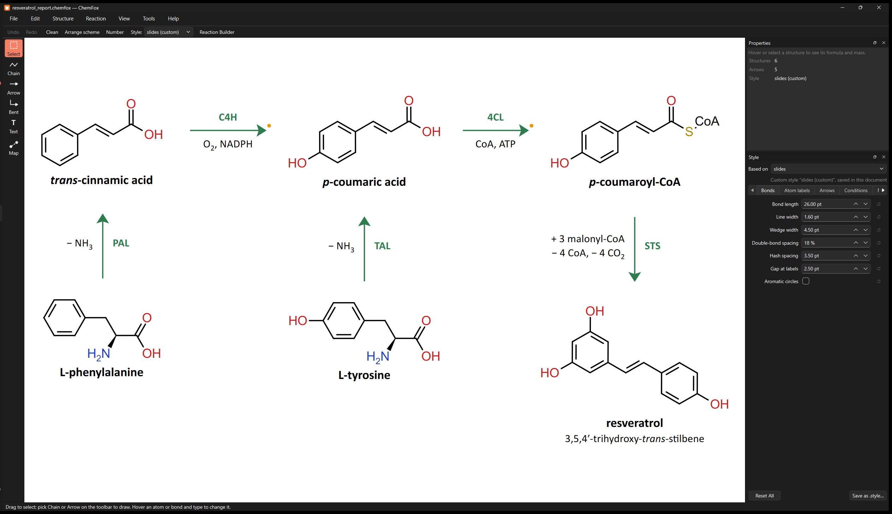
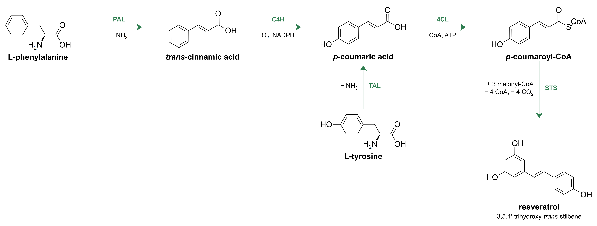

A keyboard-first editor for chemical structures and reaction schemes.
Point at an atom, press a key. Built for figures in papers, reports and slides. Free, offline, open source.

Beta. All downloads & release notes · user guide · tell me what breaks
Windows: "Windows protected your PC"
Beta builds aren't code-signed yet. Click More info, then Run anyway. No administrator rights needed.
macOS: "can't be opened"
Drag ChemFox to Applications, then right-click it → Open → Open the first time. If it says the app is damaged,
run xattr -dr com.apple.quarantine /Applications/ChemFox.app in Terminal.
Hover and type
Point at an atom and press N, O, 2 or Shift+6. No tool switching for everyday edits, and every key can be rebound.
Build without touching the mouse
Press 1 and the new atom lights up orange: every key now acts on it. Point the mouse to steer the chain, walk along bonds with the arrow keys, drop in an acetyl with Shift+C. Esc when you're done.
Reactions in one keystroke
Ctrl+→ on a structure draws the arrow and a mapped copy, ready to edit into the product, with the bonds you break and form coloured as you go. Or type SMILES for a whole reaction and get it laid out and auto-mapped.
Schemes that stay tidy
Arrange keeps your arrow directions and converging routes, can tidy just a selection, and lines products up with their reactants.
Chemistry that's right
RDKit underneath: formula, mass, SMILES, InChI, R/S and E/Z labels, valence and stereo warnings. Abbreviations like CO₂Et count toward the formula, and you can define your own groups from SMILES.
Publication styles and exports
ACS 1996, slides, poster and dark presets, edited in a simple panel. SVG, PDF, PNG at any resolution, or EMF for Word and PowerPoint.

| C N O S… | Change the atom under the cursor, or add one on empty canvas |
| 1 2 3 | Grow a bond (the new atom stays focused), or set a bond's order |
| Shift+3…8 · R | Attach or fuse a ring · benzene |
| Shift+C · E | Add an acetyl · expand or collapse a group label |
| W H F | Wedge, hash, flip a bond |
| Ctrl+→ ↓ ← ↑ | Continue the reaction from the selected structure |
| Ctrl+L | Clean up a structure; press again for other orientations |
| Ctrl+Shift+A | Arrange the scheme |
On a Mac, use ⌘ where it says Ctrl. Every key is in the guide.
ChemFox runs entirely on your computer: no accounts, no analytics, no telemetry, and your drawings never leave your machine. The only thing it ever asks the internet is GitHub's list of releases, at most once a day, to tell you about updates (turn it off under Help).